Most recent recipes
Reshmi kebabs with green chutney
45 mins
Serves 4
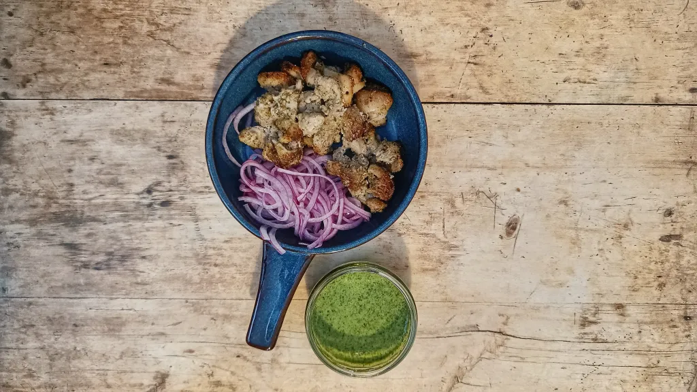
Amish’s gujarati vegetable curry
50 mins
Serves 4
Veal parmigiana
37 mins
Serves 4
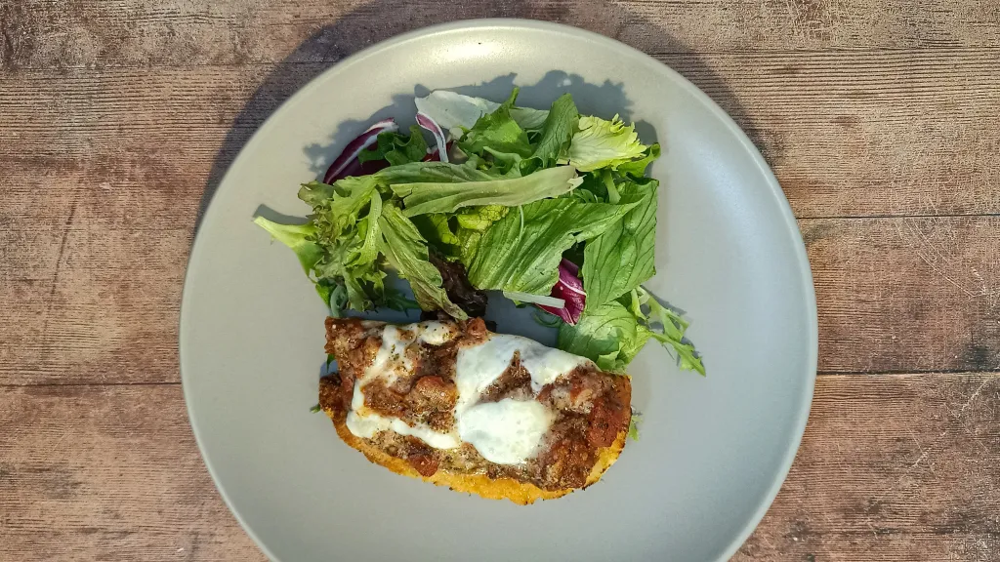
Sticky spiced apple pork belly slices
1 hr 40 mins
Serves 2
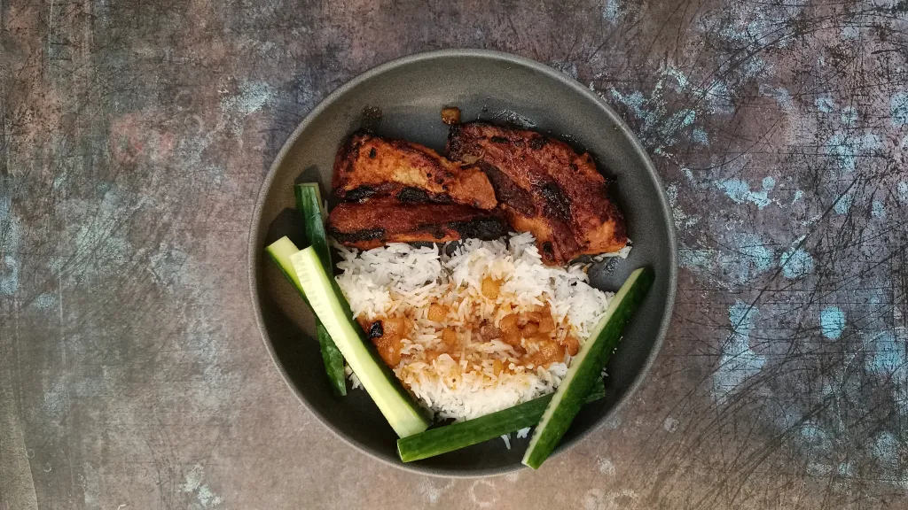
Blueberry lemon biscuits
1 hr
Serves 9
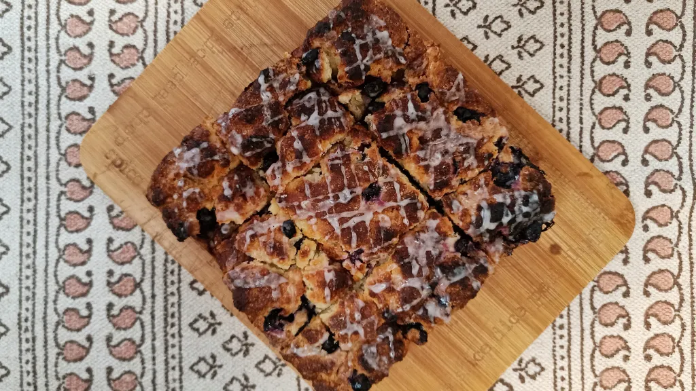
Herby grilled chicken with rocket, sundried tomato and olive salad
36 mins
Serves 4
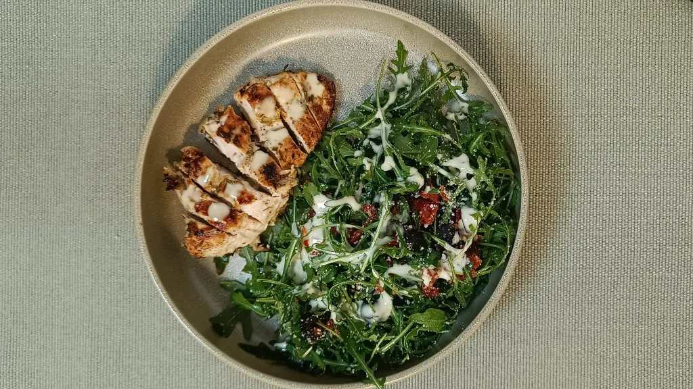
Harissa beef msemen
1 hr
Serves 6-8
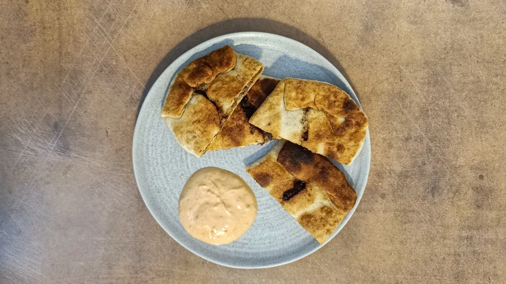
Deep-dish meatball marinara pizza
2 hr
Serves 6
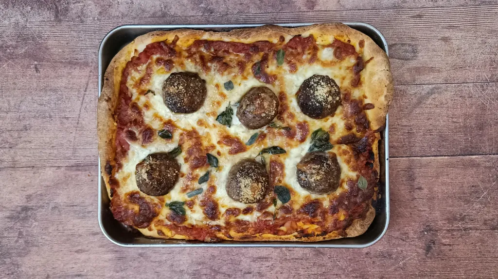
Anticuchos with aji amarillo salsa
1 hr 10 mins
Serves 4
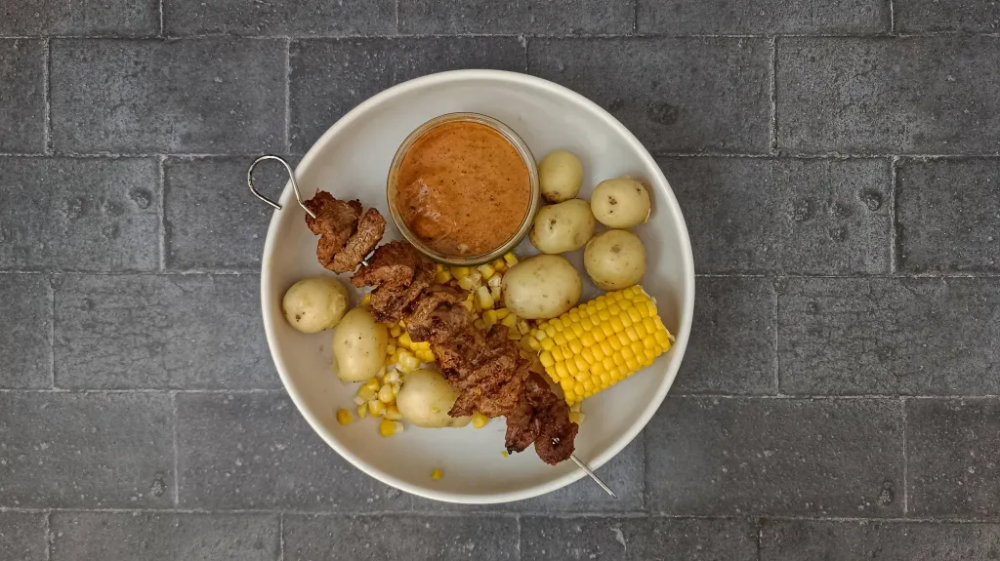
Curried chicken and rice soup
6 hr 15 mins
Serves 4
Lamb kebabs with rosemary vegetables
42 mins
Serves 4
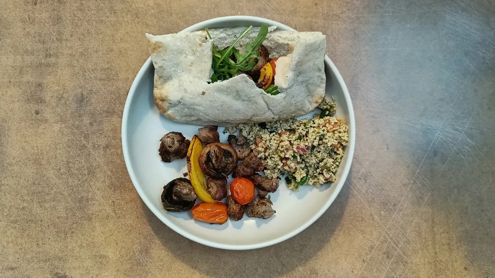
Pinchos morunos with mojo picon
1 hr
Serves 4
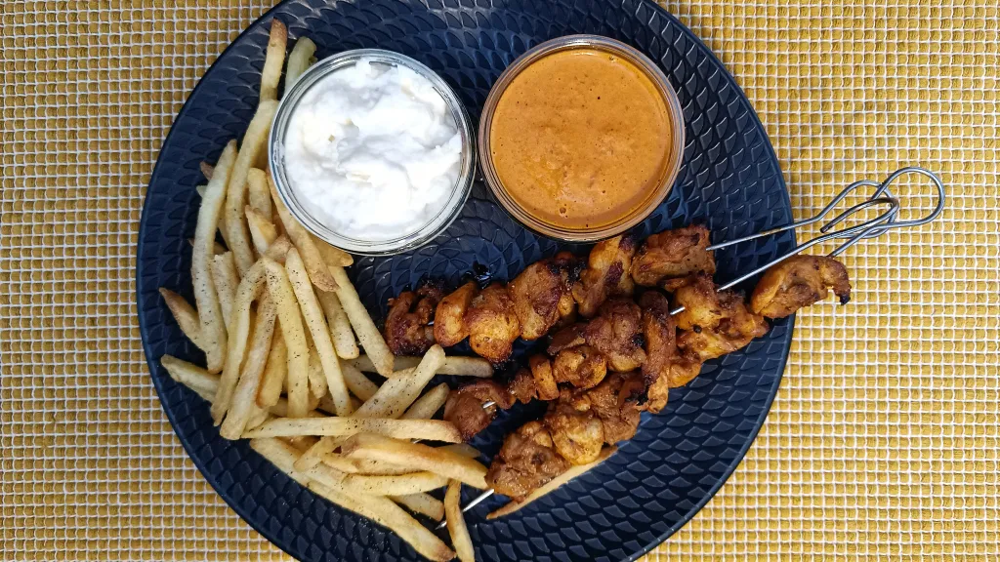
Pork loin with oregano tapenade and tomato sauce
1 hr 10 mins
Serves 4
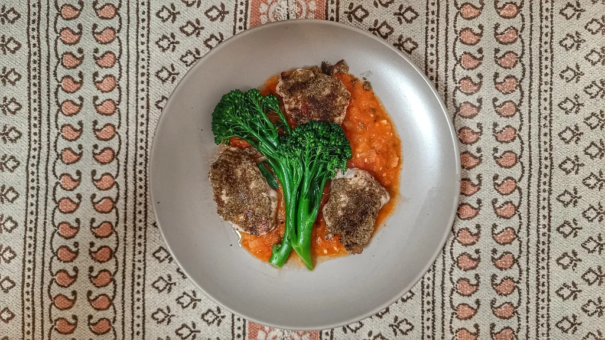
Smoked salmon pasta with sauce vièrge
30 mins
Serves 4

Dak-kkochi with beansprout salad
40 mins
Serves 4